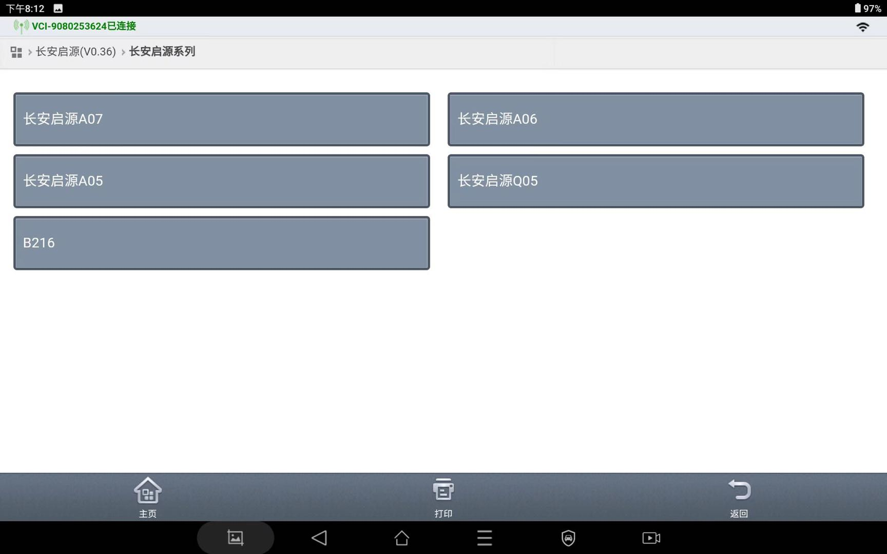
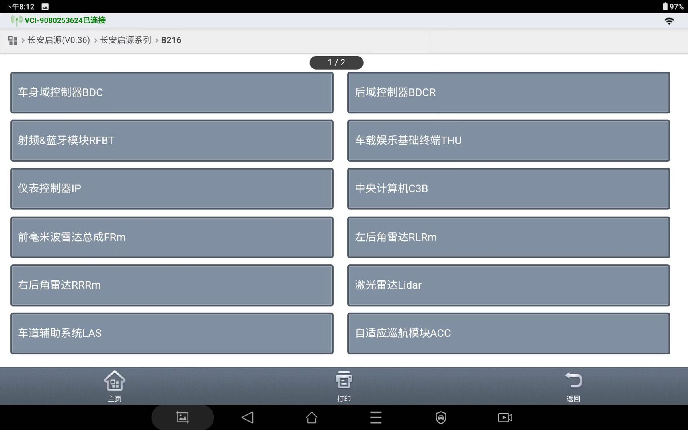
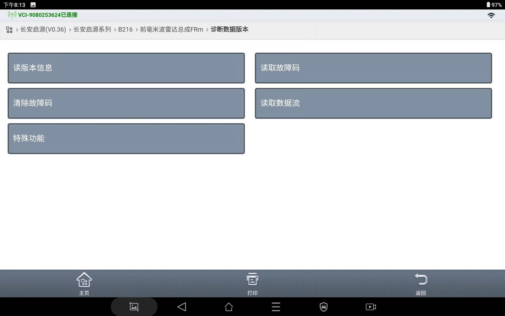
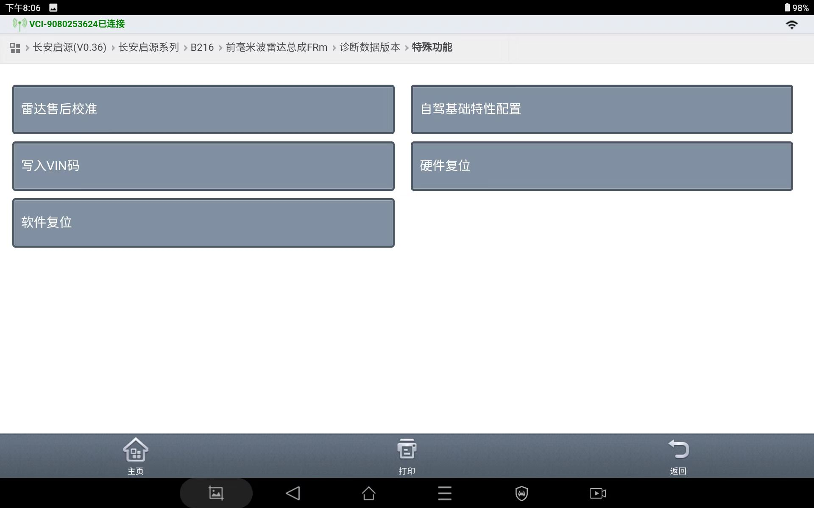
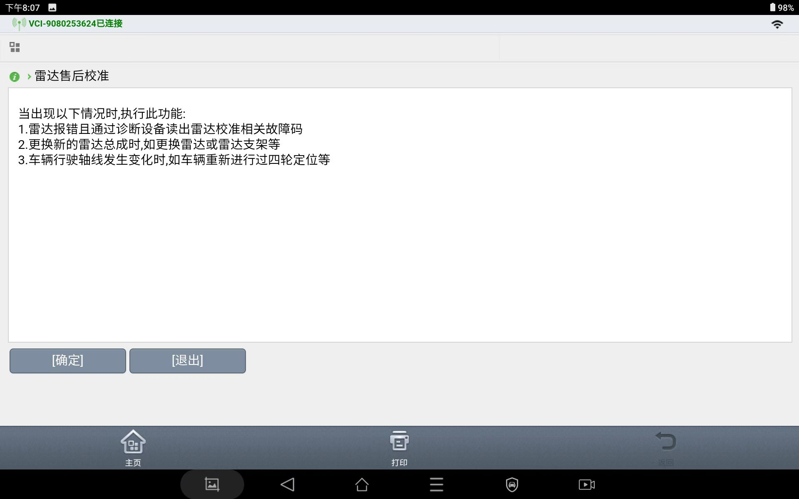
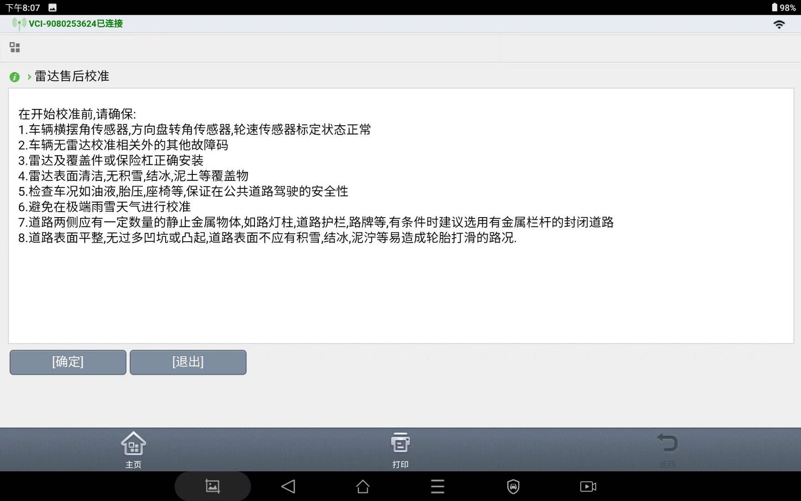
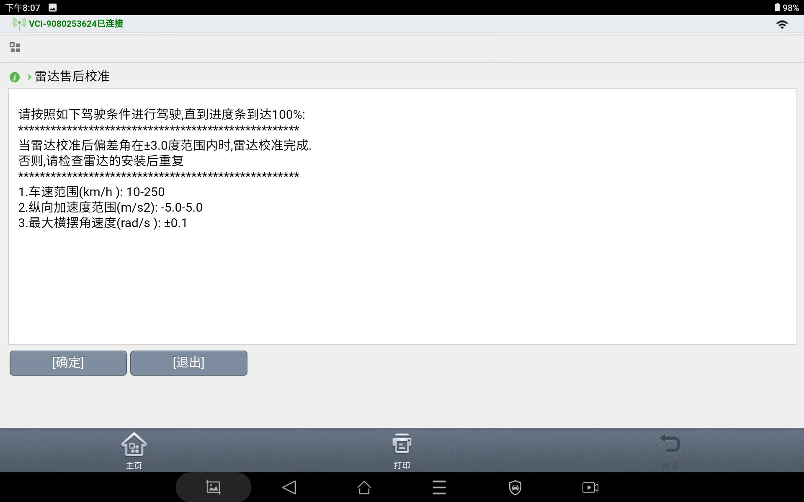
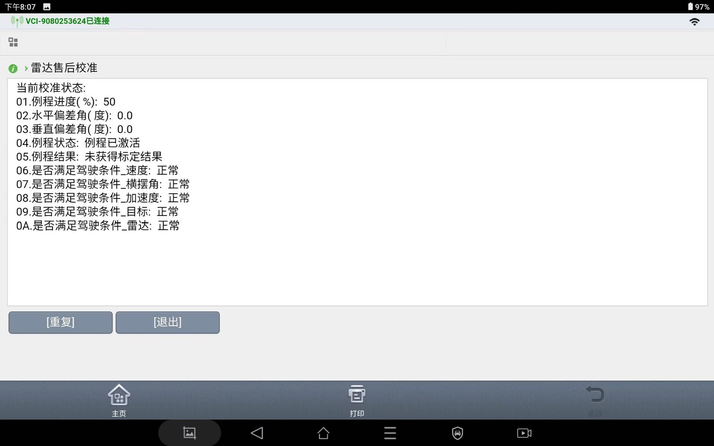

需要通过诊断仪来完成前向毫米波雷达总成标定。
将诊断仪线束连接车辆：
打开诊断仪软件，根据车型及车辆配置进行选择。

点击进入 前向毫米波雷达总成FRm

点击进入 特殊功能

点击进入 雷达售后校准

弹出售后标定界面，点击 确定



售后标定执行中

标定完成。例程进度100%，状态正常即可。
售后标定条件和注意事项
（1）平稳匀速行驶，车速范围:30km/h~50km/h（速度控制平稳）；
（2）在直线道上行驶，横摆角速度范围-0.6°/s~0.6°/s（转向控制平稳）；
（3）两侧道路边缘距本车范围均满足: 6m≤D≤15m；
（4）道路边缘尽量选择有一定静止金属物体的道路，如金属护栏、密集路灯杆等，有条件时建议选择有金属护栏的直道封闭道路;
（5）避免雨雪天气，道路湿滑场景、上下坡路段、颠簸路段等特殊天气与场景；
故障码处理
进入 读故障码界面，点击 查询，确认无当前、历史故障码；
进入 清故障码界面，弹窗提示“是否清除FR所有的故障码”，点击 清除
确认无当前故障码和历史故障码后，完成售后标定